Конфигурация приложения⚓︎
Примечание
Для выполнения нижеописанных действий требуется роль Менеджер.
Выберите пункт меню Applications в левом верхнем углу экрана. Нажав значок Show app details, откройте страницу приложения.

Слева в меню выберите пункт Development, чтобы просмотреть и настроить следующие элементы:
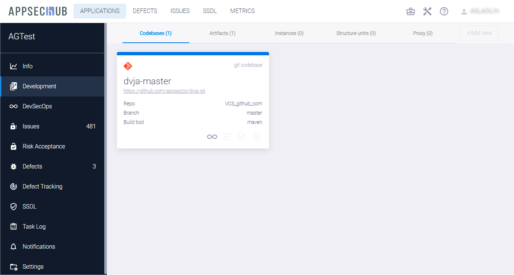
- Codebases — кодовые базы (исходный код).
- Artifacts — артефакты.
- Instances — экземпляры приложений (тестовые стенды).
- Structure units — структурные модули.
- Proxy — прокси-репозитории.
Кодовые базы⚓︎
Приложение не ограничено одной кодовой базой, а может включать несколько. Например, одно приложение может иметь разный код и разные кодовые базы для целей разработки и выпуска (<application-dev> и <application-release>) с разными метриками исходного кода, разными метриками дефектов и т. д.
Выберите пункт меню Development, а затем нажмите кнопку +Add new в правом верхнем углу вкладки Codebases, чтобы добавить новую кодовую базу. На экране появится окно Create codebase.

Укажите следующие параметры кодовой базы:
- Выберите инструмент репозитория из выпадающего меню Select Repository, например VCS_Bitbucket.
- Введите абсолютный URL репозитория кодовой базы в поле Enter absolute codebase URL.
После ввода указанных параметров произойдет автоматическое распознавание кодовой базы. При необходимости внесите изменения в появившиеся дополнительные поля.
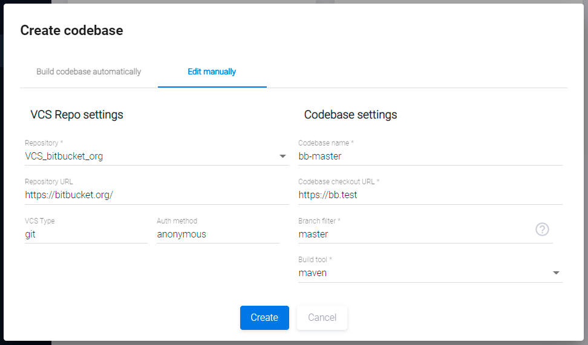
- VCS type — тип системы контроля версий.
- Auth method — метод аутентификации, для Bitbucket — login_password.
- Codebase name — это имя кодовой базы в системе.
- Codebase checkout URL — URL для проверки кодовой базы, он содержит точный URL-адрес репозитория кода для приложения. Рекомендуется скопировать и вставить этот URL из инструмента репозитория.
- Branch filter — фильтр ветвей кодовой базы. В данном поле поддерживается использование масок, например, если указать значение feature_*, будут выбраны все ветки, имеющие префикс «feature_».
- Build tool определяет инструмент сборки, используемый для работы с репозиторием кода (в данном примере — Maven).
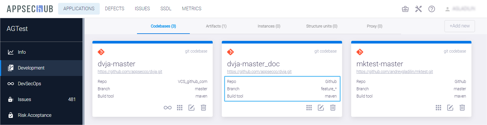
Примечание
В имени ветки можно использовать символ «*» в качестве универсального знака, заменяющего один или несколько символов. Например, имя ветки feature/* позволяет использовать эту карточку кодовой базы для работы со всеми feature-ветвями в кодовой базе.
Нажмите кнопку Create, чтобы создать новую кодовую базу в AppSec.Hub.
На экране появится карточка вновь созданной кодовой базы и подтверждающее уведомление в правом нижнем углу пользовательского интерфейса.
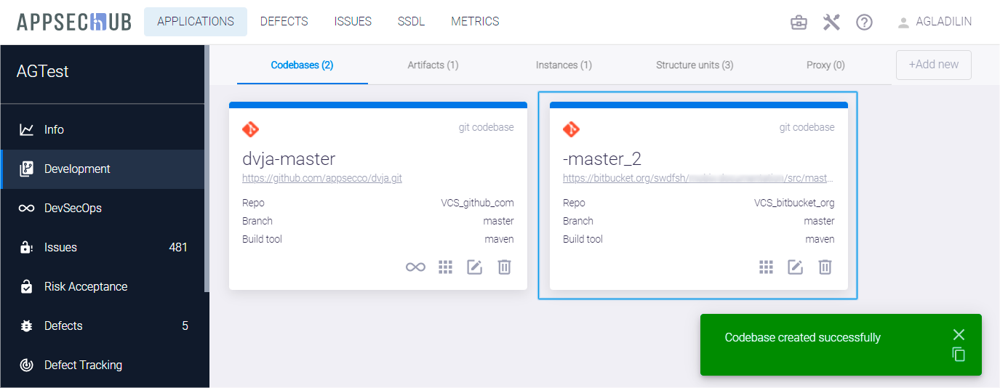
Для конфигурации существующей кодовой базы нажмите иконку Edit codebase  в правом нижнем углу ее карточки.
в правом нижнем углу ее карточки.
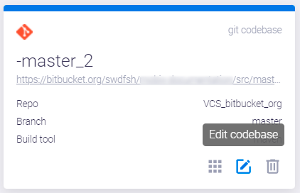
На экране появится окно Update codebase.

Измените параметры кодовой базы, как описано выше, и нажмите кнопку Update.
Артефакты⚓︎
Артефакт либо создается, либо используется командой, работающей над разработкой приложения. Например, артефакты, создаваемые инструментом Maven для разработки приложения, включают: JAR (Java ARchive) — Java-архивы, исходные и двоичные дистрибутивы, WAR-файлы (Web ARchive, или Web Application Resource) и т. д. Каждый maven-артефакт имеет идентификатор группы (group id), идентификатор артефакта (artifact ID), версию, расширение и классификатор (расширение + классификатор могут быть назван по типу артефакта).
Примечание
Поддерживаются следующие типы артефактов: Maven artifact, NuGet package, Docker container, Node package (NPM), Raw file, yum/rpm package, Pypi package.
Выберите пункт меню Development слева, а затем нажмите кнопку +Add new в правом верхнем углу вкладки Artifacts, чтобы добавить новый артефакт, или нажмите на иконку Edit artifact на карточке существующего артефакта, чтобы проверить и/или сконфигурировать параметры артефакта.
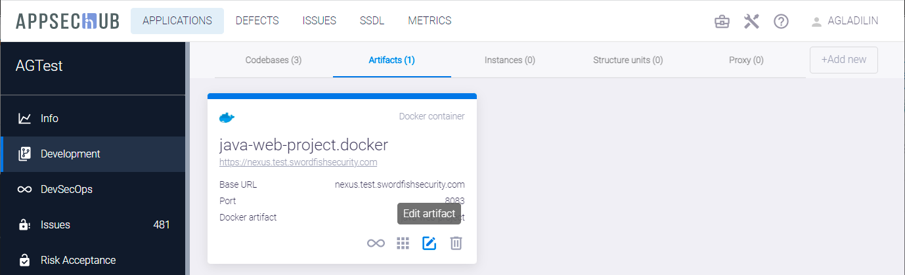
На экране появится окно Update artifact.

В этом окне укажите следующие параметры артефакта:
- Выберите репозиторий из выпадающего меню Repository.
- В поле Name укажите имя артефакта.
- Repository Name — имя репозитория.
- Group — группа.
- В выпадающем меню Artifact type выберите тип артефакта. Поддерживаются следующие типы артефактов: Maven artifact, NuGet package, Docker container, Node package (NPM), Raw file, yum/rpm package, Pypi package.
- В поле Artifact укажите первую часть имени артефакта.
- В выпадающем меню Extension type выберите тип расширения (war, jar, ejb и т. д.).
Нажмите кнопку Update, чтобы сохранить изменения.
Чтобы удалить артефакт, нажмите иконку Delete на его карточке.
Примечание
При удалении артефакта на странице Development он также удаляется из Security Pipeline, где он используется как тегируемый.
Экземпляры приложения⚓︎
Каждое приложение может иметь несколько экземпляров, например, один экземпляр используется в качестве тестового стенда, второй — для приемо-сдаточных испытаний, а третий — для развертывания в рабочей промышленной среде (production).
Выберите пункт меню Development слева, а затем нажмите кнопку +Add new в правом верхнем углу вкладки Instances, чтобы добавить новый экземпляр приложения, или иконку редактирования на карточке существующего экземпляра приложения, чтобы проверить и/или настроить параметры этого экземпляра.
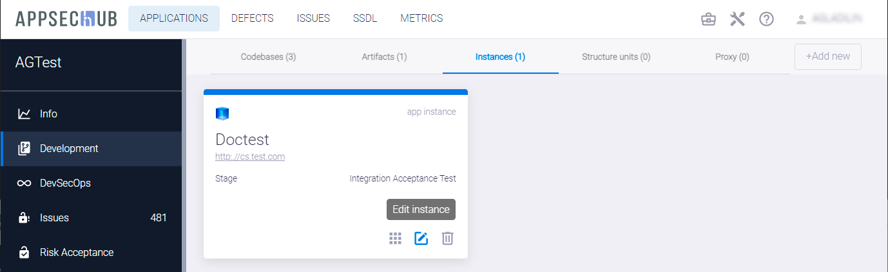
На экране появится окно Update instance.
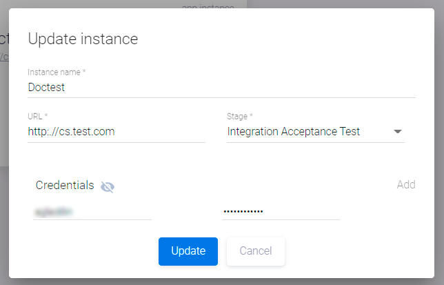
Укажите в этом окне следующие параметры экземпляра приложения:
- Instance name — имя экземпляра приложения.
- URL — адрес экземпляра приложения.
- Выберите этап из выпадающего меню Stage (System test, User Acceptance Test, Production и т. д.).
- В разделе Credentials определяется список пользователей и их пароли для доступа к экземпляру приложения. Используйте кнопку Add справа, чтобы добавить нового пользователя. Нажмите иконку рядом с учетными данными, чтобы пароли пользователей отображались на экране. Нажмите эту иконку еще раз, чтобы снова скрыть пароли.
Нажмите кнопку Update, чтобы сохранить изменения.
Структурные единицы⚓︎
На странице приложения выберите слева пункт меню Settings и перейдите на вкладку General. Текущий тип структурной единицы структуры приложения отображается в разделе Structure unit type.
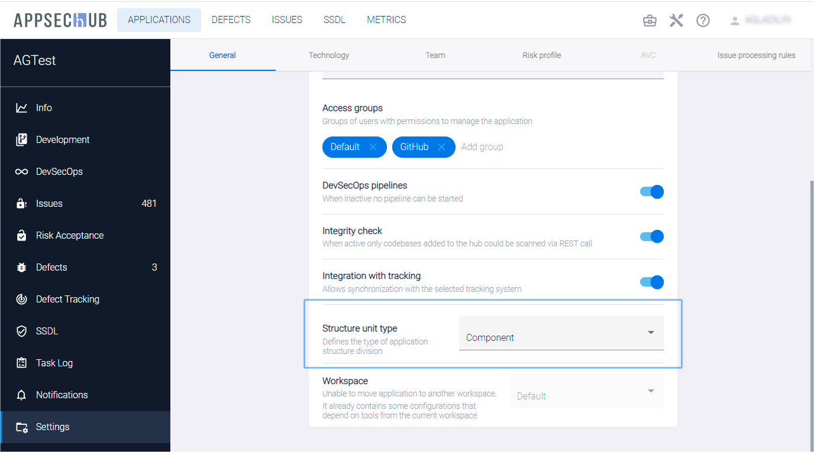
Тип структурной единицы структуры приложения может быть выбран из выпадающего меню (None, Module, Component или Microservice).
Возможность определения типа структурной единицы позволяет настроить работу с приложением в AppSec.Hub под структуру приложения (модули, компоненты или микросервисы). Например, если приложение имеет микросервисную архитектуру, целесообразно выбрать Microservice в разделе Structure unit type на вкладке General.
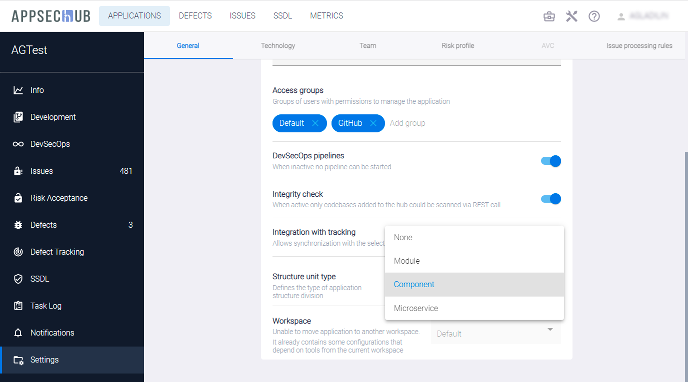
Если тип структурной единицы структуры приложения определен как микросервис, структурные единицы соответствующего типа могут быть созданы с помощью кнопки +Add new на вкладке Structure units страницы разработки приложения Development.
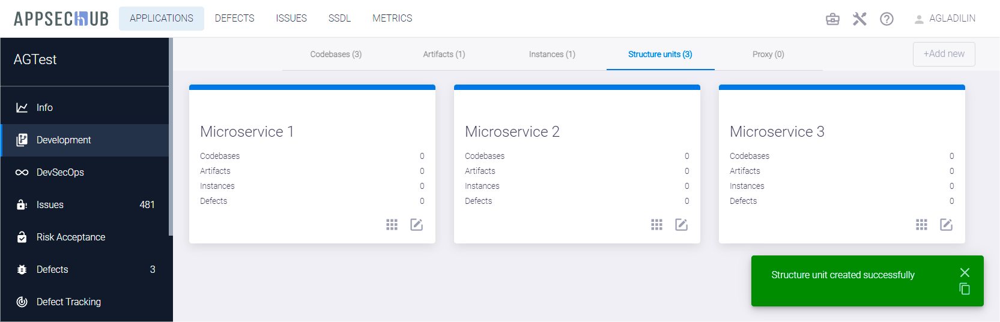
Каждая из этих структурных единиц имеет свои собственные кодовые базы, артефакты, экземпляры и дефекты. Каждая карточка структурной единицы отображает их количество, относящееся к этой структурной единице. Нажмите иконку Edit unit на карточке структурной единицы, чтобы обновить ее параметры. На экране появится окно Update structure unit.
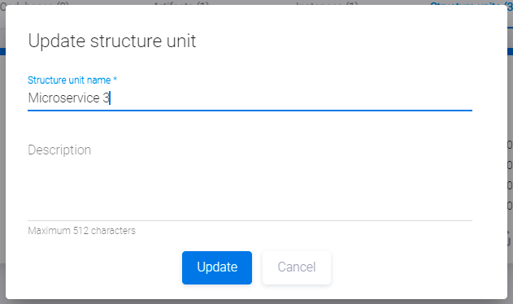
Введите имя и описание структурной единицы и нажмите кнопку Update.
Используйте иконку Open details на карточке, чтобы просмотреть информацию об этой структурной единице.
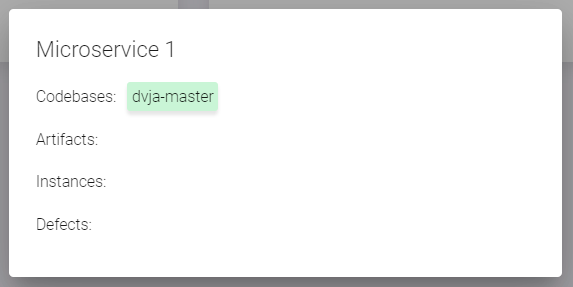
Используйте иконку на карточке кодовой базы (см. вкладку Codebases), артефакта (Artifacts) или экземпляра (Instances), чтобы отнести этот элемент к структурной единице.

На экране появится окно Assign codebase to structure unit.

Выберите структурную единицу из выпадающего меню и нажмите кнопку Save. Выберите в выпадающем меню пункт None (remove from unit), чтобы удалить этот элемент из структурной единицы.
Прокси-репозитории⚓︎
В AppSec.Hub реализована возможность использования прокси-репозиториев.
Выберите соответствующее приложение на странице Applications.

Выбрав слева пункт меню Development, перейдите на вкладку Proxy. На данной вкладке отображаются прокси-репозитории. Чтобы создать новый прокси-репозиторий, нажмите кнопку +Add new.
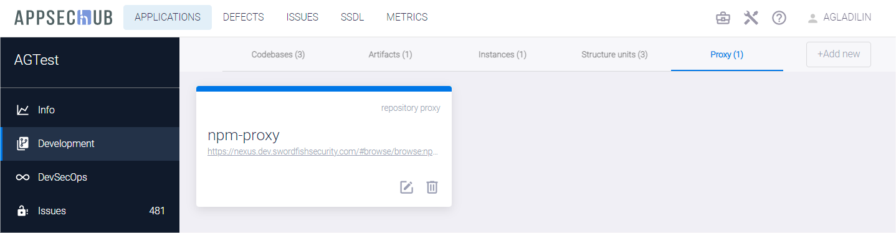
Появится диалоговое окно Create repository proxy. В поле Repository Manager выберите менеджер репозиториев, а в поле Repository proxy — необходимый репозиторий. После заполнения обеих полей, нажмите кнопку Save, чтобы создать прокси-репозиторий, или Cancel, чтобы отменить.

Вновь созданный прокси-репозиторий появляется на вкладке Proxy, а в правом нижнем углу экрана отображается соответствующее подтверждающее сообщение.
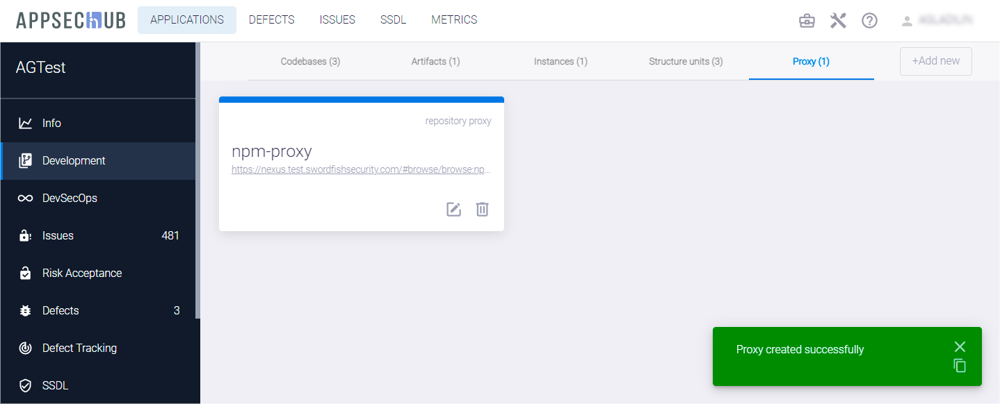
Созданный прокси-репозиторий автоматически добавляется в контур контроля разработки программного обеспечения, если на стороне Repository Manager включена функция контроля загружаемых компонент. Выбрав слева пункт меню DevSecOps, перейдите на вкладку DevSecOps perimeter control. На данной вкладке отображаются существующие прокси-репозитории с указанием используемой для них практики DevSecOps.
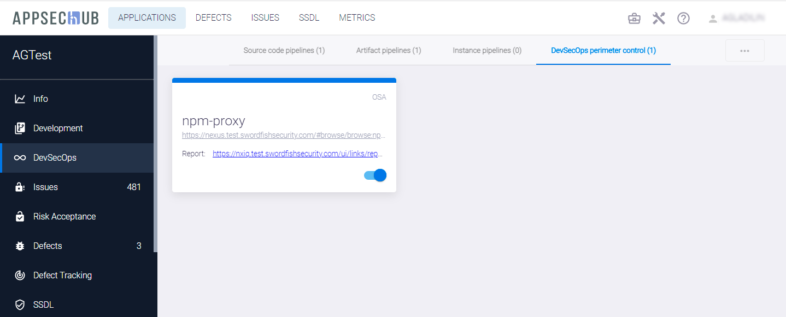
Например
В Nexus Repository Manager настроена интеграция с Nexus IQ, и для прокси-репозитория maven-central добавлена IQ: Audit and Quarantine capability. Это указывает, что практика контроля периметра уже применяется для данного прокси-репозитория, поэтому на вкладке DevSecOps perimeter control для репозитория maven-central отображается запись о включенном контроле периметра.
Чтоб исключить прокси-репозиторий из контура контроля, воспользуйтесь селектором, расположенным в правом нижнем углу соответствующей репозиторию карточке.
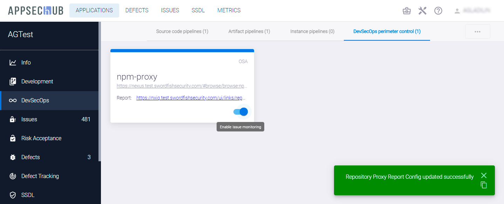
При исключении или включении прокси-репозитория в контур контроля в правой нижней части экрана отображается соответствующее подтверждающее сообщение.
Кроме этого, предусмотрена возможность удаления прокси-репозитория. Выбрав в меню слева пункт Development, перейдите на вкладку Proxy. Нажмите значок  на карточке прокси-репозитория, чтобы удалить соответствующий прокси-репозиторий.
на карточке прокси-репозитория, чтобы удалить соответствующий прокси-репозиторий.
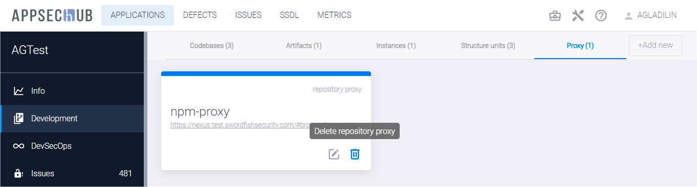
В появившемся диалоговом окне подтвердите удаление, нажав кнопку Confirm, или отмените кнопкой Cancel.
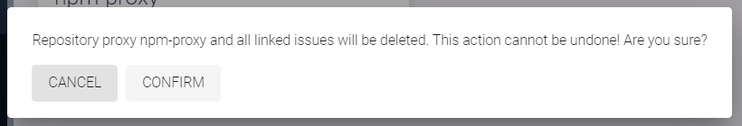
При удалении прокси-репозитория в правом нижнем углу экрана отображается соответствующее подтверждающее сообщение.
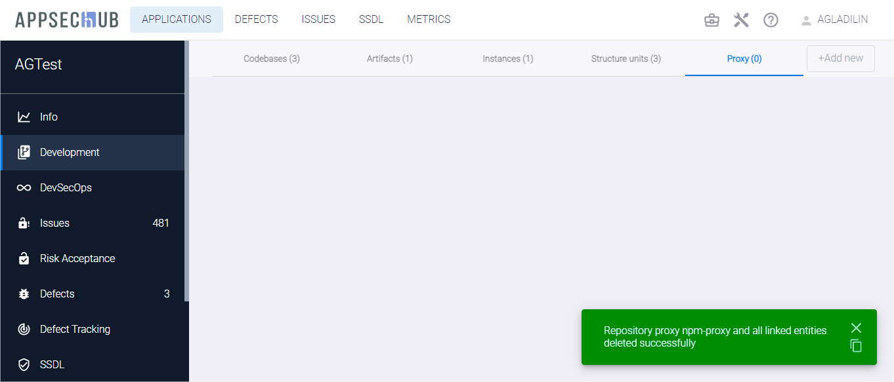
Удаленный прокси-репозиторий больше не отображается на вкладке Proxy раздела Development, а также на вкладке DevSecOps perimeter control раздела DevSecOps и, соответственно, не может быть включен в контур контроля разработки программного обеспечения.
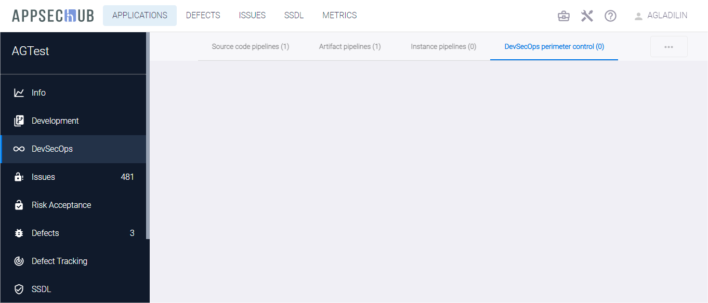